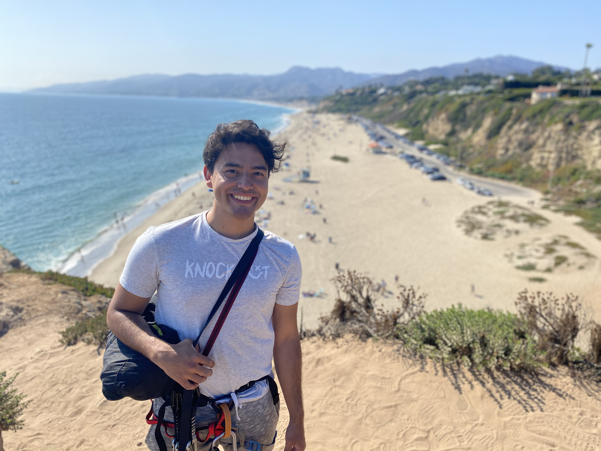
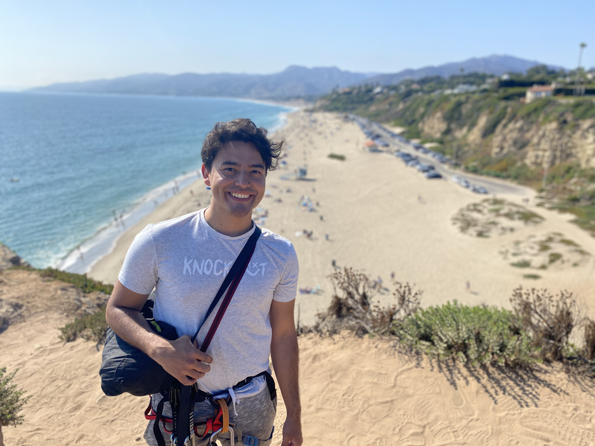

One of my favorite hobbies is to practice sports. I think that it is a lot of fun going outside with friends, meeting people, and maintaining healthy habits. So far, my favorite sport is mountain climbing. I started climbing in 2008 when I was in high school. However, when I started, I only practiced “bouldering” in indoor climbing gyms. It wasn’t until 2015 that I started to practice mountain climbing outdoors. I remember the first time that I felt like I had truly met the sport. I was on vacation with my family in a town called Suesca. I saw the guys climbing, smiling, trying hard to finish one route, and I asked them if I could try. One of the guys, Alejandro, responded, “Of course”. I tried, and that day I discovered two important things. One, a friend. That day Alejandro became my climbing professor and my friend. Two, my favorite sport and passion.
I want to share my experience climbing. This journey is not easy. From the very first day that I started climbing in Suesca, there were so many challenges. First, I didn’t want to invest in a sport that I didn’t like. So, I spent a whole month trying to climb every weekend in Suesca, which was 2 hours driving from my house. I used to wake up every Sunday at 6am, pack my backpack, drive to Suesca, and start climbing at 10am. After arriving, there is another session of packing and inspecting the equipment to make sure it is safe and in good condition. After the 4 sessions, I felt a real passion for the sport. I told Alejandro, and we designed a climbing program training for 5 months. This time included a strict diet and gym training to improve my strength and climbing level. I gave up sugar and ran 5 km each day. I also woke up each Saturday and drove to Suesca at 7am, climbed all day Saturday, slept at Alejandro’s house, and started training again the next day. This was a tough routine that I followed for 5 straight months. When I finished my class, I bought my climbing equipment, and started to go with Alejandro, this time as a friend and not as a student, to different parts of Colombia to climb.
This sport is hard, but it can teach you different things. First, the mind is really tough, but it is reliable, and you will develop resilience. After your sessions, you will feel how your energy is renewed, and how you can confront different problems and maintain calm. Probably, as I did, you will find amazing friends. You will meet incredible places, and you will definitely love hiking because the best climbing routes are a few miles away from the cities, in the middle of two mountains, or in a forest, but for sure in a nice and beautiful place.
Contact me if you want to know more about this project. julian.galarza@berkeley.edu